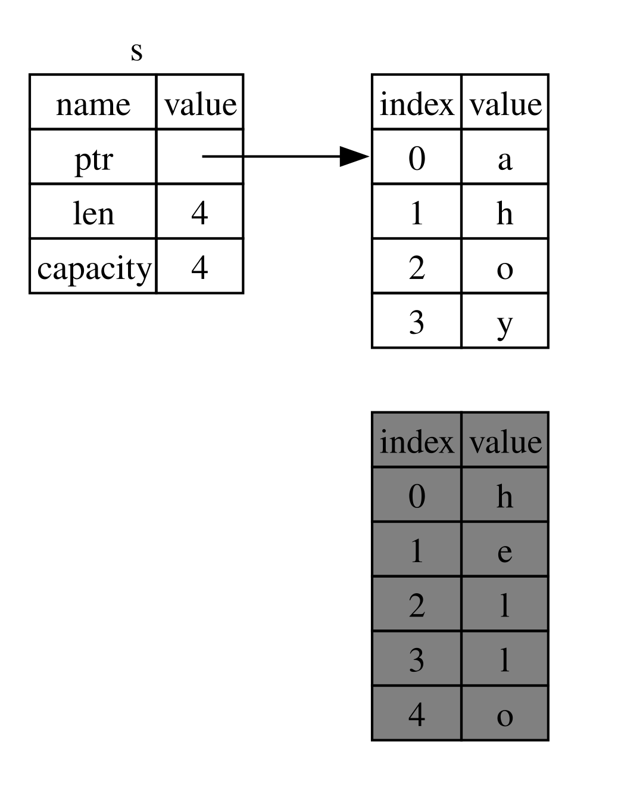

مالکیت چیست؟
مالکیت (ownership) مجموعهای از قواعد است که نحوه مدیریت حافظه در یک برنامه Rust را تعیین میکند. همه برنامهها باید شیوه استفاده خود از حافظه رایانه را در زمان اجرا مدیریت کنند. برخی زبانها زبالهروب (garbage collector) دارند که بهطور منظم و در حین اجرای برنامه به دنبال حافظهای میگردد که دیگر استفاده نمیشود؛ در زبانهای دیگر، برنامهنویس باید حافظه را صراحتاً تخصیص دهد و آزاد کند. Rust رویکرد سومی دارد: حافظه از طریق سیستمی از مالکیت و با مجموعهای از قواعد که کامپایلر آنها را بررسی میکند مدیریت میشود. اگر هر یک از این قواعد نقض شود، برنامه کامپایل نخواهد شد. هیچیک از ویژگیهای مالکیت، برنامه شما را در زمان اجرا کند نمیکند.
از آنجا که مالکیت برای بسیاری از برنامهنویسان مفهومی تازه است، عادت کردن به آن کمی زمان میبرد. خبر خوب این است که هر چه با Rust و قواعد سیستم مالکیت باتجربهتر شوید، نوشتن طبیعی کدی که ایمن و کارآمد باشد برایتان آسانتر میشود. ادامه دهید!
وقتی مالکیت را بفهمید، پایهای محکم برای درک ویژگیهایی خواهید داشت که Rust را منحصربهفرد میکنند. در این فصل، مالکیت را با کار روی چند مثال میآموزید که روی یک ساختار داده بسیار رایج متمرکز هستند: رشتهها (strings).
پشته و heap
بسیاری از زبانهای برنامهنویسی از شما نمیخواهند که زیاد به پشته (stack) و heap فکر کنید. اما در یک زبان برنامهنویسی سیستمی مانند Rust، اینکه یک مقدار روی پشته باشد یا روی heap، بر رفتار زبان و دلیل تصمیمهایی که باید بگیرید تأثیر میگذارد. بخشهایی از مالکیت در ادامه این فصل در ارتباط با پشته و heap توضیح داده میشوند، بنابراین در اینجا توضیح مختصری برای آمادگی ارائه میشود.
هم پشته و هم heap بخشهایی از حافظه هستند که کد شما میتواند در زمان اجرا از آنها استفاده کند، اما ساختار آنها متفاوت است. پشته مقادیر را به همان ترتیبی که دریافت میکند ذخیره میکند و به ترتیب معکوس آنها را حذف میکند. به این ویژگی آخرین ورودی، اولین خروجی (LIFO) گفته میشود. یک دسته بشقاب را تصور کنید: وقتی بشقاب بیشتری اضافه میکنید، آن را روی دسته میگذارید و وقتی به یک بشقاب نیاز دارید، یکی را از بالا برمیدارید. اضافه کردن یا برداشتن بشقاب از وسط یا پایین دسته به این خوبی کار نمیکند! اضافه کردن داده push کردن روی پشته و برداشتن داده pop کردن از پشته نامیده میشود. همه دادههایی که روی پشته ذخیره میشوند باید اندازهای مشخص و ثابت داشته باشند. دادههایی که اندازهشان در زمان کامپایل نامعلوم است یا ممکن است تغییر کند، باید بهجای آن روی heap ذخیره شوند.
heap کمسازمانتر است: وقتی دادهای را روی heap قرار میدهید، مقدار مشخصی فضا درخواست میکنید. تخصیصدهنده حافظه (memory allocator) یک جای خالی در heap پیدا میکند که به اندازه کافی بزرگ باشد، آن را «در حال استفاده» علامت میزند و یک اشارهگر (pointer) که آدرس آن مکان است برمیگرداند. این فرایند تخصیص روی heap نامیده میشود و گاهی بهاختصار فقط تخصیص (allocating) خوانده میشود (push کردن مقادیر روی پشته تخصیص محسوب نمیشود). از آنجا که اشارهگر به heap اندازهای مشخص و ثابت دارد، میتوانید اشارهگر را روی پشته ذخیره کنید، اما وقتی داده واقعی را میخواهید، باید اشارهگر را دنبال کنید. رستورانی را تصور کنید که در آن نشستهاید. وقتی وارد میشوید، تعداد افراد گروهتان را اعلام میکنید و میزبان یک میز خالی که جای همه را داشته باشد پیدا میکند و شما را به آنجا میبرد. اگر یکی از اعضای گروه دیر برسد، میتواند بپرسد شما کجا نشانده شدهاید تا شما را پیدا کند.
push کردن روی پشته سریعتر از تخصیص روی heap است، زیرا تخصیصدهنده هرگز لازم نیست دنبال جایی برای ذخیره داده جدید بگردد؛ آن مکان همیشه بالای پشته است. در مقایسه، تخصیص فضا روی heap کار بیشتری لازم دارد، چون تخصیصدهنده ابتدا باید فضایی به اندازه کافی بزرگ برای نگهداری داده پیدا کند و سپس حسابداری لازم برای تخصیص بعدی را انجام دهد.
دسترسی به داده در heap عموماً کندتر از دسترسی به داده روی پشته است، زیرا برای رسیدن به آن باید یک اشارهگر را دنبال کنید. پردازندههای امروزی هر چه کمتر در حافظه جهش کنند سریعترند. با ادامه همان تشبیه، پیشخدمتی را در نظر بگیرید که از میزهای زیادی سفارش میگیرد. کارآمدترین روش این است که همه سفارشهای یک میز را بگیرید و بعد سراغ میز بعدی بروید. گرفتن سفارش از میز A، سپس از میز B، دوباره از A و باز هم از B فرایندی بسیار کندتر خواهد بود. به همین ترتیب، پردازنده معمولاً اگر روی دادهای کار کند که نزدیک دادههای دیگر است (مانند پشته) کارش را بهتر انجام میدهد تا وقتی داده دورتر است (مانند heap).
وقتی کد شما یک تابع را فراخوانی میکند، مقادیری که به تابع ارسال میشوند (از جمله، احتمالاً اشارهگرهایی به دادههای روی heap) و متغیرهای محلی تابع روی پشته push میشوند. وقتی تابع تمام شود، آن مقادیر از پشته pop میشوند.
پیگیری اینکه کدام بخشهای کد از کدام دادههای روی heap استفاده میکنند، به حداقل رساندن دادههای تکراری روی heap، و پاکسازی دادههای بلااستفاده روی heap تا فضا تمام نشود، همگی مسائلی هستند که مالکیت به آنها میپردازد. وقتی مالکیت را بفهمید، دیگر لازم نیست زیاد به پشته و heap فکر کنید. اما دانستن اینکه هدف اصلی مالکیت مدیریت دادههای heap است میتواند توضیح دهد چرا مالکیت به این شکل کار میکند.
قواعد مالکیت
ابتدا نگاهی به قواعد مالکیت میاندازیم. این قواعد را در ذهن داشته باشید تا مثالهایی را که آنها را نشان میدهند مرور کنیم:
- هر مقدار در Rust یک مالک (owner) دارد.
- در هر لحظه فقط یک مالک میتواند وجود داشته باشد.
- وقتی مالک از دامنه (scope) خارج شود، مقدار drop خواهد شد.
دامنه متغیر
اکنون که از نحو پایه Rust گذشتهایم، دیگر همه کد fn main() { را در مثالها نمیآوریم؛ پس اگر همراه ما پیش میروید، مطمئن شوید مثالهای بعدی را بهصورت دستی داخل یک تابع main قرار میدهید. در نتیجه، مثالهای ما کمی مختصرتر خواهند بود و به ما اجازه میدهند به جای کد تکراری، روی جزئیات اصلی تمرکز کنیم.
بهعنوان اولین مثال از مالکیت، به دامنه برخی متغیرها نگاه میکنیم. دامنه (scope) محدودهای در برنامه است که یک آیتم در آن معتبر است. متغیر زیر را در نظر بگیرید:
let s = "hello";متغیر s به یک لیترال رشتهای اشاره میکند، که مقدار رشته در متن برنامه ما بهصورت ثابت نوشته شده است. این متغیر از نقطهای که اعلان میشود تا پایان دامنه فعلی معتبر است. لیست ۴-۱ برنامهای را نشان میدهد که با کامنتهایی مشخص شده که متغیر s کجا معتبر است.
fn main() {
{ // s is not valid here, since it's not yet declared
let s = "hello"; // s is valid from this point forward
// do stuff with s
} // this scope is now over, and s is no longer valid
}به عبارت دیگر، در اینجا دو نقطه زمانی مهم وجود دارد:
- وقتی
sوارد دامنه میشود، معتبر است. - تا زمانی که از دامنه خارج شود معتبر باقی میماند.
در این مرحله، رابطه بین دامنهها و زمان معتبر بودن متغیرها شبیه زبانهای برنامهنویسی دیگر است. اکنون با معرفی نوع String بر پایه این درک بنا میکنیم.
نوع String
برای نشان دادن قواعد مالکیت، به نوع دادهای پیچیدهتر از مواردی که در بخش «انواع داده» فصل ۳ بررسی کردیم نیاز داریم. انواعی که قبلاً بررسی شدند اندازهای مشخص دارند، میتوانند روی پشته ذخیره شوند و وقتی دامنهشان تمام شد از پشته pop شوند، و اگر بخش دیگری از کد لازم داشته باشد در دامنهای متفاوت از همان مقدار استفاده کند، میتوان آنها را سریع و بهسادگی کپی کرد تا نمونهای جدید و مستقل ساخته شود. اما ما میخواهیم دادهای را بررسی کنیم که روی heap ذخیره میشود و ببینیم Rust چگونه میداند چه زمانی آن داده را پاک کند، و نوع String مثال بسیار خوبی است.
ما روی بخشهایی از String تمرکز میکنیم که به مالکیت مربوط میشوند. این جنبهها برای انواع داده پیچیده دیگر نیز صادق است، چه کتابخانه استاندارد آنها را ارائه کرده باشد و چه خودتان آنها را ساخته باشید. جنبههای غیرمرتبط با مالکیت String را در فصل ۸ بحث خواهیم کرد.
ما لیترالهای رشتهای را قبلاً دیدهایم، که در آنها مقدار رشته بهصورت ثابت در برنامه نوشته شده است. لیترالهای رشتهای مناسباند، اما برای هر موقعیتی که ممکن است بخواهیم از متن استفاده کنیم مناسب نیستند. یک دلیل این است که تغییرناپذیرند (immutable). دلیل دیگر این است که هر مقدار رشتهای را نمیتوان هنگام نوشتن کد دانست: برای مثال، اگر بخواهیم ورودی کاربر را بگیریم و ذخیره کنیم چه؟ Rust برای همین موقعیتها نوع String را دارد. این نوع دادهای را مدیریت میکند که روی heap تخصیص یافته است و به همین دلیل میتواند مقدار متنی را ذخیره کند که در زمان کامپایل برای ما نامعلوم است. میتوانید با استفاده از تابع from، یک String را از یک لیترال رشتهای بسازید، به این صورت:
let s = String::from("hello");عملگر دو نقطه مضاعف :: به ما اجازه میدهد این تابع from خاص را زیر فضای نام نوع String قرار دهیم، بهجای اینکه از نامی مثل string_from استفاده کنیم. درباره این نحو بیشتر در بخش «متدها» فصل ۵ صحبت خواهیم کرد، و هنگام بحث درباره فضای نام با ماژولها در «مسیرها برای ارجاع به یک آیتم در درخت ماژول» در فصل ۷.
این نوع رشته میتواند تغییر کند:
fn main() {
let mut s = String::from("hello");
s.push_str(", world!"); // push_str() appends a literal to a String
println!("{s}"); // this will print `hello, world!`
}پس تفاوت در اینجا چیست؟ چرا String میتواند تغییر کند اما لیترالها نمیتوانند؟ تفاوت در این است که این دو نوع چگونه با حافظه سروکار دارند.
حافظه و تخصیص
در مورد لیترال رشتهای، ما محتوا را در زمان کامپایل میدانیم، بنابراین متن مستقیماً در فایل اجرایی نهایی قرار داده میشود. به همین دلیل لیترالهای رشتهای سریع و کارآمدند. اما این ویژگیها فقط از تغییرناپذیری لیترال رشتهای ناشی میشوند. متأسفانه نمیتوانیم برای هر قطعه متنی که اندازهاش در زمان کامپایل نامعلوم است و ممکن است در زمان اجرای برنامه تغییر کند، یک تکه حافظه در باینری قرار دهیم.
با نوع String، برای پشتیبانی از یک قطعه متن تغییرپذیر و قابل رشد، باید مقداری حافظه روی heap تخصیص دهیم که در زمان کامپایل نامعلوم است، تا محتوا را نگه دارد. این یعنی:
- حافظه باید در زمان اجرا از تخصیصدهنده حافظه درخواست شود.
- به راهی نیاز داریم که وقتی کارمان با
Stringتمام شد، این حافظه را به تخصیصدهنده برگردانیم.
بخش اول را خودمان انجام میدهیم: وقتی String::from را فراخوانی میکنیم، پیادهسازی آن حافظه مورد نیازش را درخواست میکند. این تقریباً در همه زبانهای برنامهنویسی رایج است.
اما بخش دوم متفاوت است. در زبانهایی که زبالهروب (GC) دارند، GC حافظهای را که دیگر استفاده نمیشود پیگیری و پاک میکند و ما لازم نیست به آن فکر کنیم. در بیشتر زبانهای بدون GC، مسئولیت ما است که تشخیص دهیم چه زمانی حافظه دیگر استفاده نمیشود و کدی را برای آزاد کردن صریح آن فراخوانی کنیم، درست همانطور که برای درخواست آن عمل کردیم. انجام درست این کار از قدیم مسئلهای دشوار در برنامهنویسی بوده است. اگر فراموش کنیم، حافظه هدر میرود. اگر خیلی زود انجام دهیم، متغیری نامعتبر خواهیم داشت. اگر دو بار انجام دهیم، آن هم یک باگ است. باید دقیقاً یک allocate را با دقیقاً یک free جفت کنیم.
Rust مسیر متفاوتی در پیش میگیرد: حافظه بهمحض اینکه متغیری که مالک آن است از دامنه خارج شود، بهطور خودکار بازگردانده میشود. این نسخهای از مثال دامنه در لیست ۴-۱ است که به جای لیترال رشتهای از String استفاده میکند:
fn main() {
{
let s = String::from("hello"); // s is valid from this point forward
// do stuff with s
} // this scope is now over, and s is no
// longer valid
}نقطهای طبیعی وجود دارد که میتوانیم حافظه مورد نیاز String را به تخصیصدهنده برگردانیم: وقتی s از دامنه خارج میشود. وقتی یک متغیر از دامنه خارج میشود، Rust یک تابع خاص را برای ما فراخوانی میکند. این تابع drop نام دارد، و جایی است که نویسنده String میتواند کد بازگرداندن حافظه را قرار دهد. Rust در آکولاد بسته، drop را بهطور خودکار فراخوانی میکند.
نکته: در ++C، این الگوی آزادسازی منابع در پایان طول عمر یک آیتم گاهی Resource Acquisition Is Initialization (RAII) نامیده میشود. اگر از الگوهای RAII استفاده کرده باشید، تابع
dropدر Rust برایتان آشنا خواهد بود.
این الگو تأثیر عمیقی بر شیوه نوشتن کد Rust دارد. ممکن است اکنون ساده به نظر برسد، اما رفتار کد در موقعیتهای پیچیدهتر، وقتی بخواهیم چند متغیر از دادهای که روی heap تخصیص دادهایم استفاده کنند، میتواند غیرمنتظره باشد. اکنون برخی از آن موقعیتها را بررسی میکنیم.
تعامل متغیرها و دادهها با move
در Rust چند متغیر میتوانند به شیوههای مختلف با یک داده تعامل داشته باشند. لیست ۴-۲ مثالی با یک عدد صحیح نشان میدهد.
fn main() {
let x = 5;
let y = x;
}احتمالاً میتوانیم حدس بزنیم این کد چه میکند: «مقدار 5 را به x متصل کن؛ سپس از مقدار x یک کپی بگیر و آن را به y متصل کن.» اکنون دو متغیر x و y داریم و هر دو برابر 5 هستند. این دقیقاً همان چیزی است که اتفاق میافتد، چون اعداد صحیح مقادیر سادهای با اندازه مشخص و ثابتاند و این دو مقدار 5 روی پشته push میشوند.
اکنون نسخه String را ببینیم:
fn main() {
let s1 = String::from("hello");
let s2 = s1;
}این بسیار شبیه به نظر میرسد، بنابراین ممکن است فرض کنیم روش کار آن هم یکسان است: یعنی خط دوم از مقدار s1 یک کپی میگیرد و آن را به s2 متصل میکند. اما اتفاقی که میافتد دقیقاً این نیست.
به شکل ۴-۱ نگاه کنید تا ببینید در پشت صحنه چه بر سر String میآید. یک String از سه بخش تشکیل شده است که در سمت چپ نشان داده شدهاند: یک اشارهگر به حافظهای که محتوای رشته را نگه میدارد، یک طول، و یک ظرفیت. این گروه از دادهها روی پشته ذخیره میشود. در سمت راست، حافظه روی heap است که محتوا را نگه میدارد.

شکل ۴-۱: نمایش در حافظه یک String که مقدار "hello" را نگه میدارد و به s1 متصل است
طول یعنی محتوای String در حال حاضر چند بایت حافظه استفاده میکند. ظرفیت مجموع حافظهای است، بر حسب بایت، که String از تخصیصدهنده دریافت کرده است. تفاوت بین طول و ظرفیت مهم است، اما نه در این زمینه، پس فعلاً میتوان ظرفیت را نادیده گرفت.
وقتی s1 را به s2 نسبت میدهیم، داده String کپی میشود، یعنی اشارهگر، طول و ظرفیتی را که روی پشته هستند کپی میکنیم. داده روی heap را که اشارهگر به آن ارجاع میدهد کپی نمیکنیم. به عبارت دیگر، نمایش داده در حافظه مانند شکل ۴-۲ است.

شکل ۴-۲: نمایش در حافظه متغیر s2 که کپی اشارهگر، طول و ظرفیت s1 را دارد
این نمایش شبیه شکل ۴-۳ نیست، که اگر Rust داده heap را هم کپی میکرد حافظه چنین شکلی میداشت. اگر Rust چنین میکرد، عملیات s2 = s1 میتوانست از نظر کارایی زمان اجرا بسیار پرهزینه باشد، در صورتی که داده روی heap بزرگ بود.

شکل ۴-۳: امکان دیگری برای کاری که s2 = s1 ممکن بود انجام دهد، اگر Rust داده heap را هم کپی میکرد
پیشتر گفتیم وقتی یک متغیر از دامنه خارج میشود، Rust بهطور خودکار تابع drop را فراخوانی میکند و حافظه heap آن متغیر را پاک میکند. اما شکل ۴-۲ نشان میدهد هر دو اشارهگر داده به یک مکان اشاره میکنند. این یک مشکل است: وقتی s2 و s1 از دامنه خارج شوند، هر دو سعی میکنند همان حافظه را آزاد کنند. این به خطای double free معروف است و یکی از باگهای ایمنی حافظه است که پیشتر ذکر کردیم. آزاد کردن حافظه دو بار میتواند به خرابی حافظه منجر شود، که بهطور بالقوه میتواند به آسیبپذیریهای امنیتی بینجامد.
برای تضمین ایمنی حافظه، پس از خط let s2 = s1;، Rust s1 را دیگر معتبر نمیداند. بنابراین Rust لازم نیست وقتی s1 از دامنه خارج میشود چیزی را آزاد کند. ببینید وقتی پس از ساخته شدن s2 سعی میکنید از s1 استفاده کنید چه میشود؛ کار نخواهد کرد:
fn main() {
let s1 = String::from("hello");
let s2 = s1;
println!("{s1}, world!");
}خطایی مانند زیر دریافت میکنید، چون Rust از استفاده از ارجاع نامعتبر جلوگیری میکند:
$ cargo run
Compiling ownership v0.1.0 (file:///projects/ownership)
error[E0382]: borrow of moved value: `s1`
--> src/main.rs:5:16
|
2 | let s1 = String::from("hello");
| -- move occurs because `s1` has type `String`, which does not implement the `Copy` trait
3 | let s2 = s1;
| -- value moved here
4 |
5 | println!("{s1}, world!");
| ^^ value borrowed here after move
|
help: consider cloning the value if the performance cost is acceptable
|
3 | let s2 = s1.clone();
| ++++++++
For more information about this error, try `rustc --explain E0382`.
error: could not compile `ownership` (bin "ownership") due to 1 previous error
اگر هنگام کار با زبانهای دیگر اصطلاحات کپی سطحی (shallow copy) و کپی عمیق (deep copy) را شنیدهاید، مفهوم کپی کردن اشارهگر، طول و ظرفیت بدون کپی کردن داده احتمالاً شبیه ساختن یک کپی سطحی به نظر میرسد. اما چون Rust متغیر اول را هم نامعتبر میکند، بهجای کپی سطحی به آن move (انتقال) گفته میشود. در این مثال میگوییم s1 به s2 move شد. پس آنچه واقعاً اتفاق میافتد در شکل ۴-۴ نشان داده شده است.

شکل ۴-۴: نمایش در حافظه پس از نامعتبر شدن s1
این مشکل ما را حل میکند! چون فقط s2 معتبر است، وقتی از دامنه خارج شود خودش بهتنهایی حافظه را آزاد میکند و کار تمام است.
علاوه بر این، یک انتخاب طراحی در این رفتار نهفته است: Rust هرگز بهطور خودکار کپی «عمیق» از دادههای شما نمیسازد. بنابراین، هر کپی خودکاری را میتوان از نظر کارایی زمان اجرا ارزان فرض کرد.
دامنه و انتساب
عکس این موضوع در رابطه بین دامنه، مالکیت و آزاد شدن حافظه از طریق تابع drop نیز صادق است. وقتی یک مقدار کاملاً جدید را به متغیری موجود نسبت میدهید، Rust drop را فراخوانی میکند و حافظه مقدار اصلی را بلافاصله آزاد میکند. برای مثال این کد را در نظر بگیرید:
fn main() {
let mut s = String::from("hello");
s = String::from("ahoy");
println!("{s}, world!");
}ابتدا متغیر s را اعلان میکنیم و آن را به یک String با مقدار "hello" متصل میکنیم. سپس بلافاصله یک String جدید با مقدار "ahoy" میسازیم و آن را به s نسبت میدهیم. در این نقطه، هیچ چیزی به مقدار اصلی روی heap اشاره نمیکند. شکل ۴-۵ دادههای پشته و heap را در این وضعیت نشان میدهد:

شکل ۴-۵: نمایش در حافظه پس از اینکه مقدار اولیه بهطور کامل جایگزین شده است
بنابراین رشته اصلی بلافاصله از دامنه خارج میشود. Rust تابع drop را روی آن اجرا میکند و حافظهاش فوراً آزاد میشود. وقتی در پایان مقدار را چاپ کنیم، "ahoy, world!" خواهد بود.
تعامل متغیرها و دادهها با clone
اگر بخواهیم داده heap مربوط به String را بهطور عمیق کپی کنیم، نه فقط داده پشته را، میتوانیم از متدی رایج به نام clone استفاده کنیم. نحو متدها را در فصل ۵ بحث خواهیم کرد، اما چون متدها ویژگی رایج بسیاری از زبانهای برنامهنویسی هستند، احتمالاً قبلاً آنها را دیدهاید.
این هم مثالی از متد clone در عمل:
fn main() {
let s1 = String::from("hello");
let s2 = s1.clone();
println!("s1 = {s1}, s2 = {s2}");
}این بهخوبی کار میکند و رفتار نشان دادهشده در شکل ۴-۳ را صراحتاً ایجاد میکند، یعنی جایی که داده heap کپی میشود.
وقتی فراخوانی clone را میبینید، میدانید که کدی دلخواه در حال اجرا است و آن کد ممکن است پرهزینه باشد. این یک نشانه بصری است که اتفاقی متفاوت در جریان است.
دادههای فقط-پشته: Copy
نکته ظریف دیگری هم هست که هنوز دربارهاش صحبت نکردهایم. این کد که با اعداد صحیح نوشته شده است — بخشی از آن در لیست ۴-۲ نشان داده شد — کار میکند و معتبر است:
fn main() {
let x = 5;
let y = x;
println!("x = {x}, y = {y}");
}اما این کد با آنچه همین الان یاد گرفتیم در تناقض به نظر میرسد: ما فراخوانی clone نداریم، اما x همچنان معتبر است و به y move نشده است.
دلیلش این است که انواعی مانند اعداد صحیح که اندازهشان در زمان کامپایل مشخص است، بهطور کامل روی پشته ذخیره میشوند، بنابراین ساختن کپی مقادیر واقعی سریع است. یعنی دلیلی وجود ندارد که بخواهیم مانع معتبر ماندن x پس از ساختن متغیر y شویم. به عبارت دیگر، اینجا تفاوتی بین کپی عمیق و سطحی نیست، پس فراخوانی clone کاری متفاوت از کپی سطحی معمول انجام نمیداد و میتوانیم آن را حذف کنیم.
Rust یک حاشیهنویسی (annotation) ویژه به نام صفت Copy دارد که میتوانیم آن را روی انواعی که روی پشته ذخیره میشوند، مانند اعداد صحیح، قرار دهیم (درباره صفتها در فصل ۱۰ بیشتر صحبت خواهیم کرد). اگر یک نوع صفت Copy را پیادهسازی کند، متغیرهایی که از آن استفاده میکنند move نمیشوند، بلکه بهسادگی کپی میشوند و پس از انتساب به متغیر دیگر همچنان معتبر میمانند.
Rust اجازه نمیدهد نوعی را با Copy حاشیهنویسی کنیم اگر آن نوع، یا هر یک از بخشهایش، صفت Drop را پیادهسازی کرده باشد. اگر نوع به اتفاقی خاص در زمان خروج مقدار از دامنه نیاز داشته باشد و ما حاشیهنویسی Copy را به آن نوع اضافه کنیم، خطای زمان کامپایل میگیریم. برای آموختن اینکه چگونه حاشیهنویسی Copy را به نوع خود اضافه کنید تا صفت را پیادهسازی کند، به «صفتهای قابل اشتقاق» در پیوست ج مراجعه کنید.
پس چه انواعی صفت Copy را پیادهسازی میکنند؟ میتوانید برای اطمینان مستندات نوع مورد نظر را بررسی کنید، اما بهعنوان یک قاعده کلی، هر گروهی از مقادیر اسکالر ساده میتواند Copy را پیادهسازی کند، و هیچ چیزی که به تخصیص نیاز دارد یا نوعی منبع است نمیتواند Copy را پیادهسازی کند. اینها برخی از انواعی هستند که Copy را پیادهسازی میکنند:
- همه انواع عدد صحیح، مانند
u32. - نوع بولی،
bool، با مقادیرtrueوfalse. - همه انواع ممیز شناور، مانند
f64. - نوع کاراکتر،
char. - تاپلها (tuple)، اگر فقط انواعی را شامل شوند که آنها هم
Copyرا پیادهسازی میکنند. برای مثال،(i32, i32)صفتCopyرا پیادهسازی میکند، اما(i32, String)نه.
مالکیت و توابع
سازوکار ارسال یک مقدار به تابع شبیه انتساب یک مقدار به متغیر است. ارسال یک متغیر به تابع، درست مانند انتساب، آن را move یا کپی میکند. لیست ۴-۳ مثالی دارد با حاشیهنویسیهایی که نشان میدهند متغیرها کجا وارد و خارج از دامنه میشوند.
fn main() {
let s = String::from("hello"); // s comes into scope
takes_ownership(s); // s's value moves into the function...
// ... and so is no longer valid here
let x = 5; // x comes into scope
makes_copy(x); // Because i32 implements the Copy trait,
// x does NOT move into the function,
// so it's okay to use x afterward.
} // Here, x goes out of scope, then s. However, because s's value was moved,
// nothing special happens.
fn takes_ownership(some_string: String) { // some_string comes into scope
println!("{some_string}");
} // Here, some_string goes out of scope and `drop` is called. The backing
// memory is freed.
fn makes_copy(some_integer: i32) { // some_integer comes into scope
println!("{some_integer}");
} // Here, some_integer goes out of scope. Nothing special happens.اگر بعد از فراخوانی takes_ownership سعی کنیم از s استفاده کنیم، Rust یک خطای زمان کامپایل صادر میکند. این بررسیهای ایستا ما را از اشتباه محافظت میکنند. سعی کنید به main کدی اضافه کنید که از s و x استفاده کند تا ببینید کجا میتوانید از آنها استفاده کنید و کجا قواعد مالکیت مانع شما میشوند.
مقادیر بازگشتی و دامنه
برگرداندن مقادیر نیز میتواند مالکیت را منتقل کند. لیست ۴-۴ مثالی از تابعی را نشان میدهد که مقداری را برمیگرداند، با حاشیهنویسیهایی مشابه لیست ۴-۳.
fn main() {
let s1 = gives_ownership(); // gives_ownership moves its return
// value into s1
let s2 = String::from("hello"); // s2 comes into scope
let s3 = takes_and_gives_back(s2); // s2 is moved into
// takes_and_gives_back, which also
// moves its return value into s3
} // Here, s3 goes out of scope and is dropped. s2 was moved, so nothing
// happens. s1 goes out of scope and is dropped.
fn gives_ownership() -> String { // gives_ownership will move its
// return value into the function
// that calls it
let some_string = String::from("yours"); // some_string comes into scope
some_string // some_string is returned and
// moves out to the calling
// function
}
// This function takes a String and returns a String.
fn takes_and_gives_back(a_string: String) -> String {
// a_string comes into
// scope
a_string // a_string is returned and moves out to the calling function
}مالکیت یک متغیر هر بار از الگوی یکسانی پیروی میکند: انتساب یک مقدار به متغیر دیگر آن را move میکند. وقتی متغیری که شامل داده روی heap است از دامنه خارج میشود، مقدار توسط drop پاک میشود، مگر اینکه مالکیت داده به متغیر دیگری منتقل شده باشد.
اگرچه این کار میکند، گرفتن مالکیت و سپس بازگرداندن آن در هر تابع کمی خستهکننده است. اگر بخواهیم تابعی از مقداری استفاده کند اما مالکیت آن را نگیرد چه؟ کاملاً آزاردهنده است که هر چیزی را که ارسال میکنیم اگر بخواهیم دوباره از آن استفاده کنیم باید پس بگیریم، علاوه بر هر دادهای که از بدنه تابع حاصل میشود و ممکن است بخواهیم برگردانیم.
Rust به ما اجازه میدهد با استفاده از تاپل چند مقدار را برگردانیم، همانطور که در لیست ۴-۵ نشان داده شده است.
fn main() {
let s1 = String::from("hello");
let (s2, len) = calculate_length(s1);
println!("The length of '{s2}' is {len}.");
}
fn calculate_length(s: String) -> (String, usize) {
let length = s.len(); // len() returns the length of a String
(s, length)
}اما این تشریفات بیش از حد و کار زیادی است برای مفهومی که باید رایج باشد. خوشبختانه برای ما، Rust قابلیتی برای استفاده از یک مقدار بدون انتقال مالکیت دارد: ارجاعها (references).